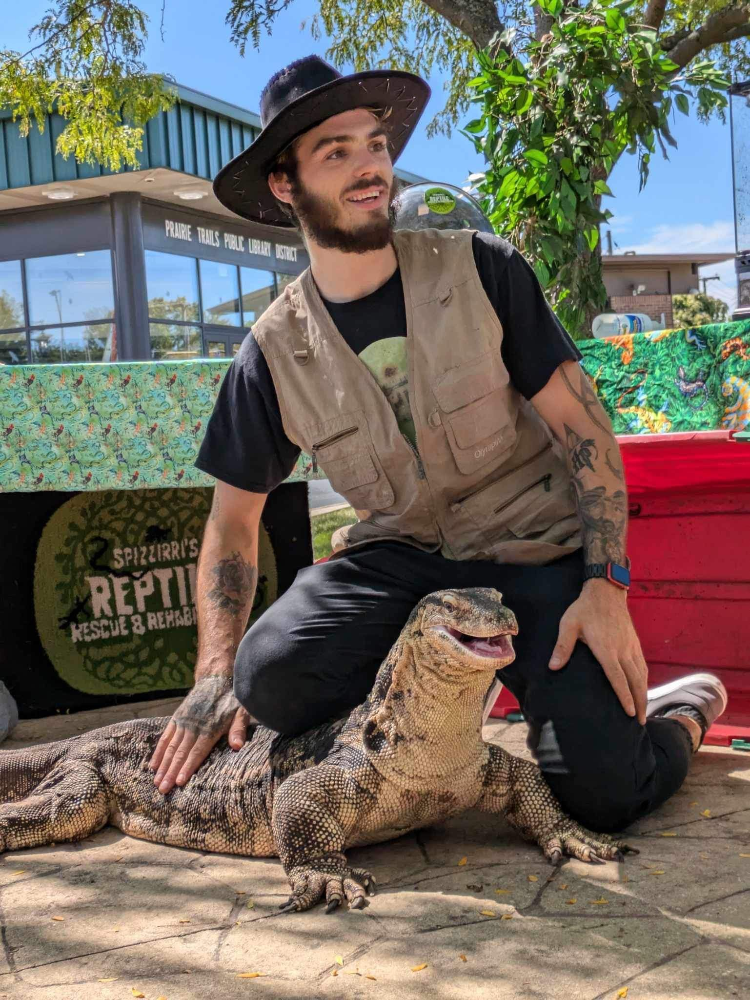

The best was to contact us is via phone. You can call us at 708-704-9911. You can also reach out to us over email at spizzirrireptilerescue@gmail.com. We look forward to speaking with you.

Niko founded this organization out of a love for exotic animals. He largely cares for and shelters reptiles; however, he also tends to a variety of exotic mammals and fish. Niko dedicates his free time to caring for the shelter's animals and maintaining the facility.
If you know of animals in need rescue and rehabilitation or you need to surrender your exotics, please call 708-704-9911 to get the process started. We will send you procedural forms to fill out before we accept any animals into the facility. Please, do not drop off animals before your forms are approved, thank you.
If you are surrendering your pets, please transport them in their current cages. Additionally, bring all of the items you currently have in the enclosure(s), and the care items you own for the animals. We will need to use the current enclosures and setups as temporary housing upon arrival.
We do not put any of our exotics down due to overwhelming numbers. To manage our capacity, we seek out suitable foster families to care for some of our animals. Additionally, we manage our facility's capacity by placing healthy surrenders up for adoption.